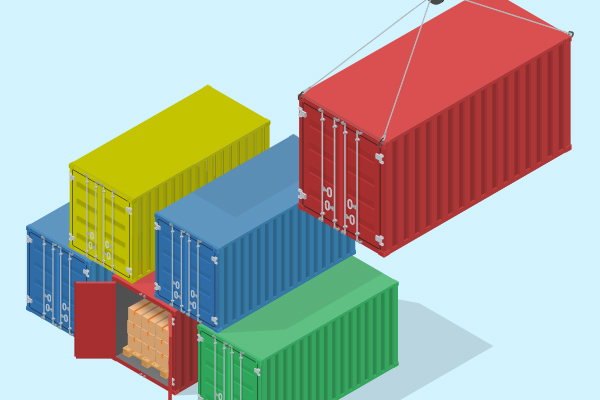
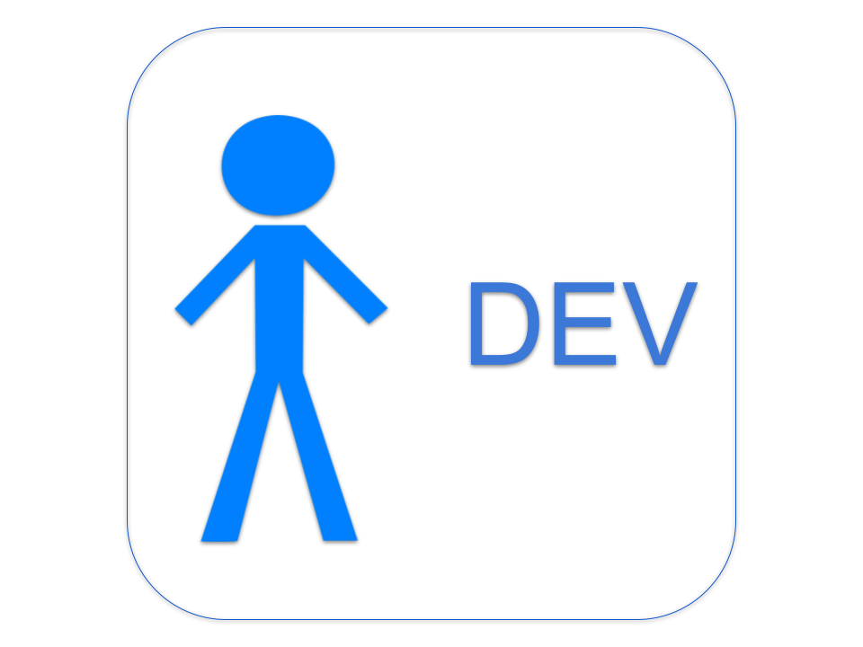

>
# Practices for Test Environments --- ## Test Environments - mitigate <span class="bold-blue">risk</span> - provide a safe place to <span class="bold-blue">experiment</span> <!-- .element: class="bullet-dots" --> --- ## Test Environments - too many reinforce/require <span class="bold-blue">slow</span> & <span class="bold-blue">inefficient processes</span> - too few artificially block and create <span class="bold-blue">confusion</span> and <span class="bold-blue">traffic jams</span> - <span class="bold-blue">poor management</span> injects both (along with other problems) <!-- .element: class="bullet-dots" --> --- ## Let’s reboot - throw out old assumptions and history - what are our <span class="bold-blue">foundational principles</span>? <!-- .element: class="bullet-arrow" --> --- ## System Architecture <span class="subheading">(high-level recap)</span> <ul class="bullet-arrow"> <li> <span>Backend</span> <img src="../media/api.png" alt="Alt Text" width="25" style="width: 25px;"> </li> <li> <span>Data Warehouse</span> </li> <li> <span>Clients</span> <ul class="bullet-arrow"> <li> <img src="../media/web.png" alt="Alt Text" width="25" style="width: 25px;"> </li> <li> <img src="../media/ios.png" alt="Alt Text" width="25" style="width: 25px;"> </li> <li> <img src="../media/android.png" alt="Alt Text" width="25" style="width: 25px;"> </li> </ul> </li> </ul> --- ## Foundational Principles ### <span class="subheading">(SDLC)</span> - all teams should be able to <span class="bold-green">validate</span> changes prior to launching in production - all teams should be able to safely <span class="bold-green">debug</span> production issues <!-- .element: class="bullet-arrow" --> --- ## Foundational Principles ### <span class="subheading">(coordination)</span> - <span class="bold-green">coordination</span> between teams, branches, and features should be minimized <span class="bold-orange subnote">(but will undoubtedly happen)</span> <!-- .element: class="bullet-arrow" --> --- ## Foundational Principles ### <span class="subheading">(code & deploy)</span> - mainline codebases should be kept <span class="bold-green">clean</span> from untested changes <span class="bold-orange subnote">(as best as possible)</span> - deployments should be co-owned between ENG/Ops, and must be delivered in under <span class="bold-green">10 minutes</span> <!-- .element: class="bullet-arrow" --> --- ## Foundational Principles ### <span class="subheading">(architecture)</span> - clients <span class="bold-green">require</span> the backend - backend does not <span class="bold-green">need</span> a client - pre-production environments should be at <span class="bold-green">parity</span> with production <span class="bold-orange subnote">(as best as possible)</span> <!-- .element: class="bullet-arrow" --> --- # PROPOSAL --- ## Containers ### <span class="subheading">what is a container?</span>  - _software that packages code and its dependencies so the application runs quickly and reliably <span class="bold-green">across computing environments</span>_ <!-- .element: class="bullet-arrow" --> --- ## Containers ### <span class="subheading">what does that mean?</span> - a container can be spun up <span class="bold-blue">anywhere</span> at <span class="bold-blue">anytime</span> with the same code/dependencies as Production/STG/QA - allowing us to test changes _<span class="bold-green">in isolation</span>_ <!-- .element: class="bullet-arrow" --> --- ## Backend<img src="../media/api.png" alt="Alt Text" width="25" style="width: 35px;"> Containers - users:  - container for <span class="bold-blue">non-calling/non-texting</span> user stories <!-- .element: class="bullet-arrow" --> --- ## Backend<img src="../media/api.png" alt="Alt Text" width="25" style="width: 35px;"> Containers - <span class="bold-blue">any branch</span> can be deployed here <span class="bold-orange subnote">(in practice, mostly feature branches)</span> - deploy on-demand <!-- .element: class="bullet-arrow" --> --- ## Backend<img src="../media/api.png" alt="Alt Text" width="25" style="width: 35px;"> Containers ### <span class="subheading">work outstanding</span> - publish <span class="bold-blue">documentation</span> to set up & use a local container - team mindset shift - local/isolated verification as a <span class="bold-blue">complement</span> to existing regression practice <!-- .element: class="bullet-arrow" --> --- ## QA Environment - users: Dev, QA - for testing calling/texting features - feature branches can go here - *any* branch can go here - deploys must be coordinated / scheduled. 1 hour mininimum, 4 hour maximum --- ## STG Env - users: Dev, QA, Product, Support - prod debugging - mainline code branch or production version only - final release validation - default for client integration testing - automated e2e tests - Monitor for issues and performance similar to production - Logging and reporting systems to track metrics, feature performance, etc as production - Set up automated alerts for critical incidents similar to production --- ## Automation - users: Dev, QA - backend - execute integration tests against backend containers (parallelized?) - client - stubbed integration with backend for daily/regular runs - full e2e nightly against STG --- ## Test Data - Invest in automation of weekly full production data snapshots (masked) - Both STG and QA get refreshes every Sunday night - Containers need a small reference dataset, otherwise managed on-demand by requirements of the feature --- ## Key Takeaways & Conclusions ### Parallel tracks 1. scheduled testing in QA 1. complete backend containerization work 1. prod data snapshots ---